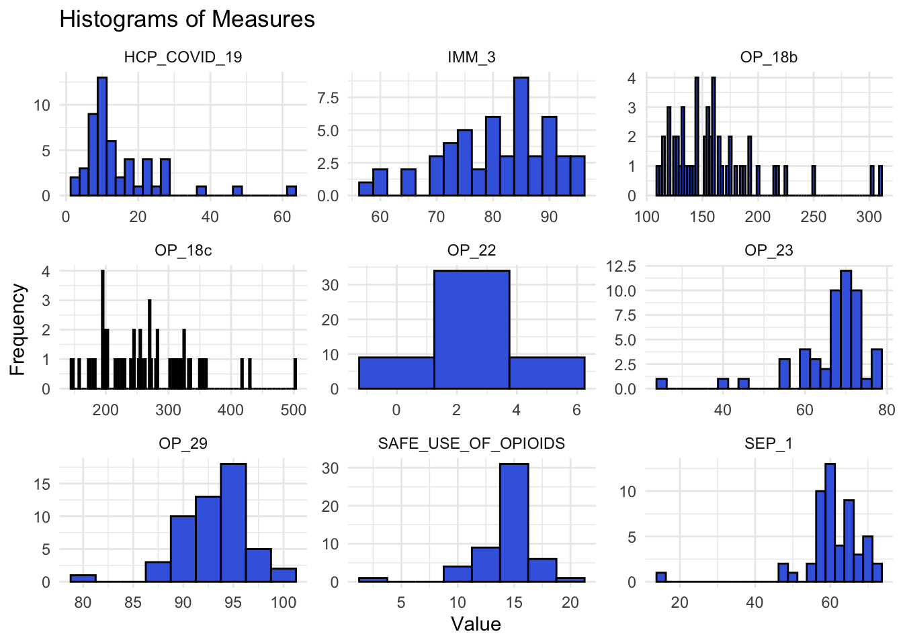
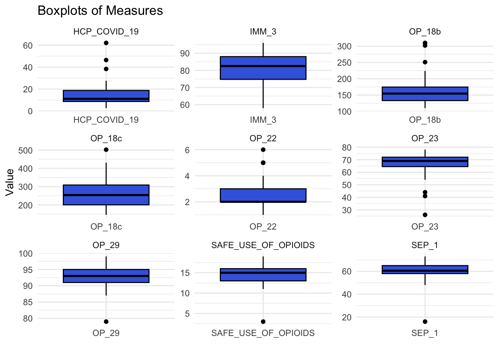
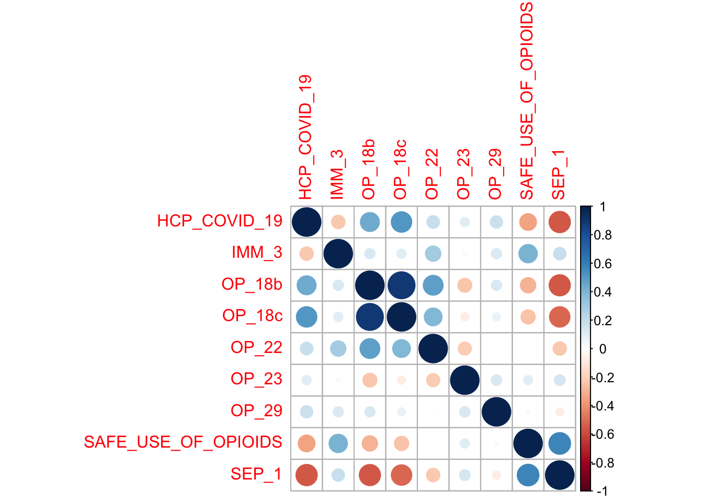
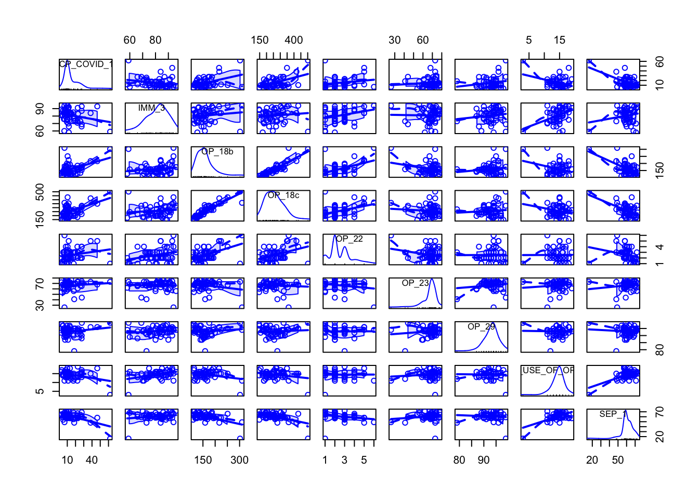
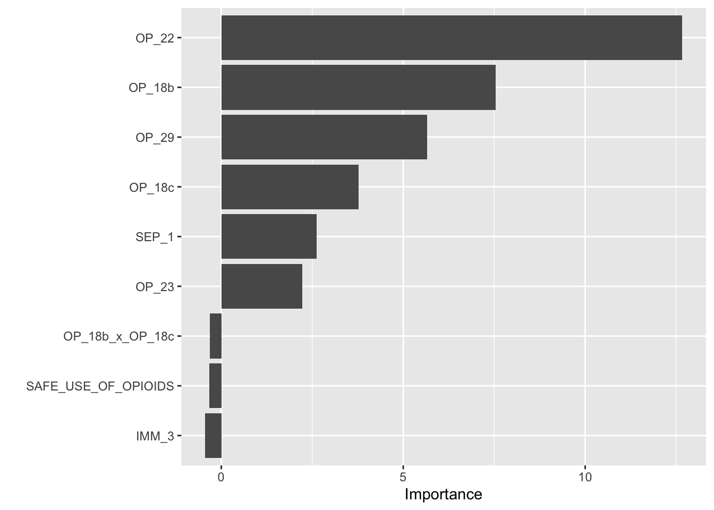
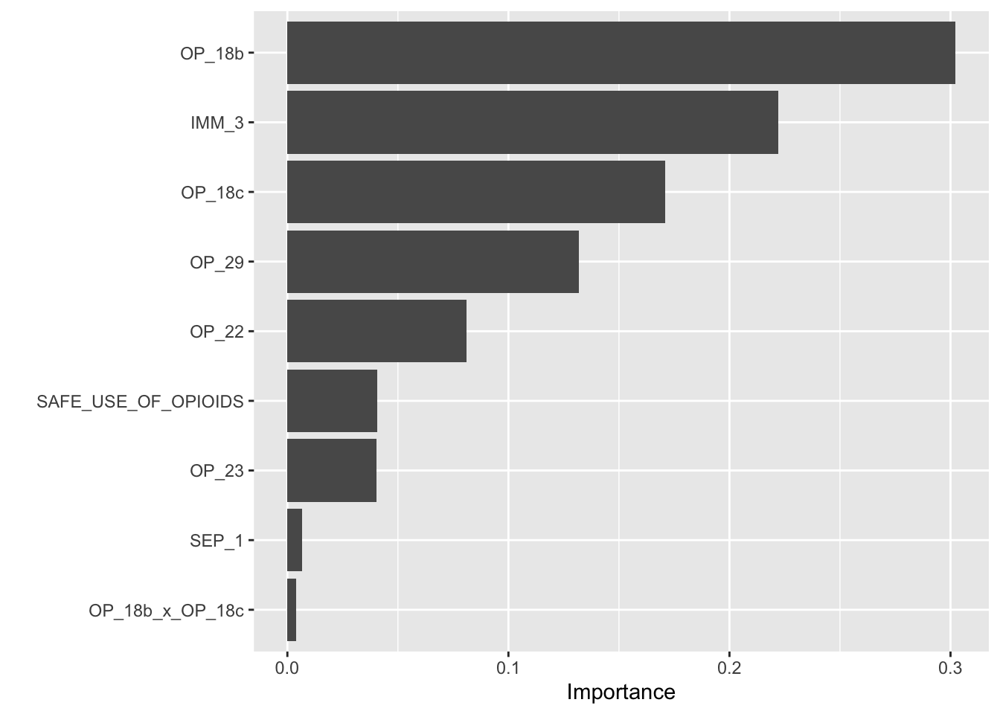

#Load required packages
library(tidytuesdayR)
library(tidyverse)
library(tidymodels)
library(ggplot2)
library(here)
library(car)
library(ranger)
library(xgboost)
library(broom)
library(vip)
library(corrplot)tidytuesday-exercise
Tidy Tuesday: Timely and Effective Care by US State
For this exercise, I will analyze the tidytuesday dataset for the week of April 8, 2025.
#Load data
tuesdata <- tidytuesdayR::tt_load('2025-04-08')
care_state <- tuesdata$care_state
#Save data in repo
write_csv(x = care_state, "care_state.csv")Data Wrangling
First, I’ll get an overhead view of the data
df <- care_state
#Data structure
str(df)spc_tbl_ [1,232 × 8] (S3: spec_tbl_df/tbl_df/tbl/data.frame)
$ state : chr [1:1232] "AK" "AK" "AK" "AK" ...
$ condition : chr [1:1232] "Healthcare Personnel Vaccination" "Healthcare Personnel Vaccination" "Emergency Department" "Emergency Department" ...
$ measure_id : chr [1:1232] "HCP_COVID_19" "IMM_3" "OP_18b" "OP_18b_HIGH_MIN" ...
$ measure_name: chr [1:1232] "Percentage of healthcare personnel who are up to date with COVID-19 vaccinations" "Healthcare workers given influenza vaccination Higher percentages are better" "Average (median) time patients spent in the emergency department before leaving from the visit A lower number o"| __truncated__ "Average time patients spent in the emergency department before being sent home A lower number of minutes is better (high)" ...
$ score : num [1:1232] 7.3 80 140 157 136 136 NA 196 230 182 ...
$ footnote : chr [1:1232] NA NA "25, 26" "25, 26" ...
$ start_date : Date[1:1232], format: "2024-01-01" "2023-10-01" ...
$ end_date : Date[1:1232], format: "2024-03-31" "2024-03-31" ...
- attr(*, "spec")=
.. cols(
.. state = col_character(),
.. condition = col_character(),
.. measure_id = col_character(),
.. measure_name = col_character(),
.. score = col_double(),
.. footnote = col_character(),
.. start_date = col_date(format = ""),
.. end_date = col_date(format = "")
.. )
- attr(*, "problems")=<externalptr> #Summary stats of each variable
summary(df) state condition measure_id measure_name
Length:1232 Length:1232 Length:1232 Length:1232
Class :character Class :character Class :character Class :character
Mode :character Mode :character Mode :character Mode :character
score footnote start_date end_date
Min. : 1 Length:1232 Min. :2023-01-01 Min. :2023-12-31
1st Qu.: 70 Class :character 1st Qu.:2023-04-01 1st Qu.:2024-03-31
Median : 93 Mode :character Median :2023-04-01 Median :2024-03-31
Mean :134 Mean :2023-04-05 Mean :2024-03-14
3rd Qu.:193 3rd Qu.:2023-04-01 3rd Qu.:2024-03-31
Max. :730 Max. :2024-01-01 Max. :2024-03-31
NA's :155 #Get unique measure names
unique(df$measure_name) [1] "Percentage of healthcare personnel who are up to date with COVID-19 vaccinations"
[2] "Healthcare workers given influenza vaccination Higher percentages are better"
[3] "Average (median) time patients spent in the emergency department before leaving from the visit A lower number of minutes is better"
[4] "Average time patients spent in the emergency department before being sent home A lower number of minutes is better (high)"
[5] "Average time patients spent in the emergency department before being sent home A lower number of minutes is better (low)"
[6] "Average time patients spent in the emergency department before being sent home A lower number of minutes is better (moderate)"
[7] "Average (median) time patients spent in the emergency department before leaving from the visit- Psychiatric/Mental Health Patients. A lower number of minutes is better"
[8] "Average time patients spent in the emergency department before leaving from the visit - Psychiatric/Mental Health Patients. A lower number of minutes is better (high)"
[9] "Average time patients spent in the emergency department before leaving from the visit - Psychiatric/Mental Health Patients. A lower number of minutes is better (low)"
[10] "Average time patients spent in the emergency department before leaving from the visit - Psychiatric/Mental Health Patients. A lower number of minutes is better (moderate)"
[11] "Average time patients spent in the emergency department before leaving from the visit - Psychiatric/Mental Health Patients. A lower number of minutes is better (very high)"
[12] "Percentage of patients who left the emergency department before being seen Lower percentages are better"
[13] "Percentage of patients who came to the emergency department with stroke symptoms who received brain scan results within 45 minutes of arrival Higher percentages are better"
[14] "Percentage of patients receiving appropriate recommendation for follow-up screening colonoscopy Higher percentages are better"
[15] "Percentage of patients who had cataract surgery and had improvement in visual function within 90 days following the surgery Higher percentages are better"
[16] "Safe Use of Opioids - Concurrent Prescribing"
[17] "Percentage of patients who received appropriate care for severe sepsis and septic shock. Higher percentages are better"
[18] "Septic Shock 3-Hour Bundle"
[19] "Septic Shock 6-Hour Bundle"
[20] "Severe Sepsis 3-Hour Bundle"
[21] "Severe Sepsis 6-Hour Bundle" #Skim
skimr::skim(df)| Name | df |
| Number of rows | 1232 |
| Number of columns | 8 |
| _______________________ | |
| Column type frequency: | |
| character | 5 |
| Date | 2 |
| numeric | 1 |
| ________________________ | |
| Group variables | None |
Variable type: character
| skim_variable | n_missing | complete_rate | min | max | empty | n_unique | whitespace |
|---|---|---|---|---|---|---|---|
| state | 0 | 1.00 | 2 | 2 | 0 | 56 | 0 |
| condition | 0 | 1.00 | 11 | 35 | 0 | 6 | 0 |
| measure_id | 0 | 1.00 | 5 | 20 | 0 | 22 | 0 |
| measure_name | 0 | 1.00 | 26 | 172 | 0 | 21 | 0 |
| footnote | 168 | 0.86 | 1 | 6 | 0 | 3 | 0 |
Variable type: Date
| skim_variable | n_missing | complete_rate | min | max | median | n_unique |
|---|---|---|---|---|---|---|
| start_date | 0 | 1 | 2023-01-01 | 2024-01-01 | 2023-04-01 | 4 |
| end_date | 0 | 1 | 2023-12-31 | 2024-03-31 | 2024-03-31 | 2 |
Variable type: numeric
| skim_variable | n_missing | complete_rate | mean | sd | p0 | p25 | p50 | p75 | p100 | hist |
|---|---|---|---|---|---|---|---|---|---|---|
| score | 155 | 0.87 | 134.04 | 102.02 | 1 | 70 | 93 | 193 | 730 | ▇▃▁▁▁ |
summary(filter(df, measure_id == "SAFE_USE_OF_OPIOIDS")$score) Min. 1st Qu. Median Mean 3rd Qu. Max. NA's
3.00 13.00 15.00 14.44 16.00 19.00 4 The data appears to have a number of different measures related to healthcare, and some of the measures are represented multiple times in individual strata (e.g. the average time patients spend in the ER and the amount of time patients spend in the ER (high)). For this analysis, I’d like to do predictive modeling to see if other outcome scores can predict the percentage of healthcare personnel who are up to date with COVID-19 vaccinations.
#Keep only relevant measures
relevant_measures <- c("HCP_COVID_19", "IMM_3", "OP_18b", "OP_18c", "OP_22", "OP_23", "OP_29", "OP_31", "SEP_1", "SAFE_USE_OF_OPIOIDS")
#Filter the data to only include measures of interest
df <- df %>%
filter(measure_id %in% relevant_measures)
#Transform to wide format
df_wide <- df %>%
select(state, measure_id, score) %>% #Keep only relevant columns
pivot_wider(names_from = measure_id, values_from = score)
#Inspect the new data
skimr::skim(df_wide)| Name | df_wide |
| Number of rows | 56 |
| Number of columns | 11 |
| _______________________ | |
| Column type frequency: | |
| character | 1 |
| numeric | 10 |
| ________________________ | |
| Group variables | None |
Variable type: character
| skim_variable | n_missing | complete_rate | min | max | empty | n_unique | whitespace |
|---|---|---|---|---|---|---|---|
| state | 0 | 1 | 2 | 2 | 0 | 56 | 0 |
Variable type: numeric
| skim_variable | n_missing | complete_rate | mean | sd | p0 | p25 | p50 | p75 | p100 | hist |
|---|---|---|---|---|---|---|---|---|---|---|
| HCP_COVID_19 | 4 | 0.93 | 15.20 | 11.01 | 2.7 | 8.70 | 11.1 | 18.75 | 62 | ▇▃▁▁▁ |
| IMM_3 | 4 | 0.93 | 80.77 | 9.37 | 58.0 | 74.75 | 82.5 | 88.00 | 96 | ▁▃▃▇▅ |
| OP_18b | 4 | 0.93 | 161.19 | 42.43 | 110.0 | 133.00 | 154.5 | 174.50 | 310 | ▇▇▂▁▁ |
| OP_18c | 4 | 0.93 | 260.25 | 74.26 | 146.0 | 200.75 | 254.0 | 309.00 | 502 | ▇▇▅▁▁ |
| OP_22 | 4 | 0.93 | 2.54 | 1.18 | 1.0 | 2.00 | 2.0 | 3.00 | 6 | ▇▃▂▁▁ |
| OP_23 | 4 | 0.93 | 66.52 | 9.36 | 26.0 | 64.50 | 69.0 | 72.00 | 78 | ▁▁▁▃▇ |
| OP_29 | 4 | 0.93 | 92.94 | 3.46 | 79.0 | 91.00 | 93.0 | 95.00 | 99 | ▁▁▃▇▃ |
| OP_31 | 44 | 0.21 | 94.75 | 7.21 | 79.0 | 91.00 | 99.0 | 100.00 | 100 | ▁▁▁▂▇ |
| SAFE_USE_OF_OPIOIDS | 4 | 0.93 | 14.44 | 2.47 | 3.0 | 13.00 | 15.0 | 16.00 | 19 | ▁▁▂▇▅ |
| SEP_1 | 4 | 0.93 | 60.62 | 8.52 | 16.0 | 58.00 | 60.5 | 65.00 | 73 | ▁▁▁▇▇ |
head(df_wide)# A tibble: 6 × 11
state HCP_COVID_19 IMM_3 OP_18b OP_18c OP_22 OP_23 OP_29 OP_31
<chr> <dbl> <dbl> <dbl> <dbl> <dbl> <dbl> <dbl> <dbl>
1 AK 7.3 80 140 196 2 60 87 NA
2 AL 5.9 76 145 226 3 67 93 100
3 AR 2.7 81 133 203 2 72 92 NA
4 AS NA NA NA NA NA NA NA NA
5 AZ 17.4 85 168 262 3 68 91 NA
6 CA 22.4 73 184 270 2 73 91 NA
# ℹ 2 more variables: SAFE_USE_OF_OPIOIDS <dbl>, SEP_1 <dbl>Now my data is in a much more suitable format for modelling, with each state getting one row, and the scores for each measure of interest being in their own columns. However, the measure OP-31 has much more missing data than the rest, so I will remove this measure.
#Remove OP-31, then remove rows with NA values
df_wide <- df_wide %>%
select(-OP_31) %>%
drop_na()
#Save clean data
write_csv(df_wide, "care_state_clean.csv")In handling missing values, 4 states/territories were dropped from the data, leaving 52 states/territories.
Exploratory Data Analysis
#Convert back to long format for facet wrapping
df_long <- pivot_longer(df_wide, cols = -state, names_to = "Measure", values_to = "Value")
#Create faceted histogram plot
ggplot(df_long, aes(x = Value)) +
geom_histogram(binwidth = 2.5, fill = "royalblue", color = "black") +
facet_wrap(~Measure, scales = "free") + #Free scales for each facet
labs(
title = "Histograms of Measures",
x = "Value",
y = "Frequency"
) +
theme_minimal()
#Create boxplots for each measure
ggplot(df_long, aes(x = Measure, y = Value)) +
geom_boxplot(fill = "royalblue", color = "black") +
facet_wrap(~Measure, scales = "free") +
labs(
title = "Boxplots of Measures",
x = "",
y = "Value"
) +
theme_minimal()
#Correlation analysis
cor_matrix <- cor(df_wide[, -1], use = "complete.obs")
cor_matrix HCP_COVID_19 IMM_3 OP_18b OP_18c
HCP_COVID_19 1.0000000 -0.22361632 0.4409803 0.51344031
IMM_3 -0.2236163 1.00000000 0.1300397 0.10655649
OP_18b 0.4409803 0.13003973 1.0000000 0.89125190
OP_18c 0.5134403 0.10655649 0.8912519 1.00000000
OP_22 0.1965596 0.29178895 0.4822204 0.39026869
OP_23 0.1050474 -0.02252278 -0.2398705 -0.07933905
OP_29 0.1868981 0.12916887 0.1300751 0.07838892
SAFE_USE_OF_OPIOIDS -0.3444330 0.41468756 -0.2902070 -0.24971301
SEP_1 -0.5577118 0.19050832 -0.5503585 -0.51443576
OP_22 OP_23 OP_29 SAFE_USE_OF_OPIOIDS
HCP_COVID_19 0.196559556 0.10504739 0.186898108 -0.344433013
IMM_3 0.291788953 -0.02252278 0.129168874 0.414687562
OP_18b 0.482220357 -0.23987049 0.130075056 -0.290207007
OP_18c 0.390268687 -0.07933905 0.078388924 -0.249713012
OP_22 1.000000000 -0.21410540 0.007773833 0.004144704
OP_23 -0.214105398 1.00000000 0.136137186 0.103562279
OP_29 0.007773833 0.13613719 1.000000000 -0.024534850
SAFE_USE_OF_OPIOIDS 0.004144704 0.10356228 -0.024534850 1.000000000
SEP_1 -0.223042588 0.14251520 -0.078740727 0.576261377
SEP_1
HCP_COVID_19 -0.55771181
IMM_3 0.19050832
OP_18b -0.55035847
OP_18c -0.51443576
OP_22 -0.22304259
OP_23 0.14251520
OP_29 -0.07874073
SAFE_USE_OF_OPIOIDS 0.57626138
SEP_1 1.00000000corrplot(cor_matrix)
#Scatterplot matrix
scatterplotMatrix(df_wide[, -1])
Based on the histograms and boxplots, it seems that all of the scores for each measure have unique ranges. It also appears that OP_18b and OP_18c are strongly associated, which will need to be handled in the modelling.
Modeling
#Set random seed
rngseed = 1234
set.seed(1234)
#Data splitting (80% training, 20% testing)
data_split <- initial_split(df_wide, prop = 0.8)
train <- training(data_split)
test <- testing(data_split)
#Cross-validation: 5-fold CV
set.seed(rngseed)
cv_folds <- vfold_cv(train, v = 5)
#Define models
#Linear regression
lm_model <- linear_reg() %>%
set_engine("lm")
#Random forest
rf_model <- rand_forest(mtry = 3, trees = 500, min_n = 5) %>%
set_engine("ranger", importance = "permutation") %>%
set_mode("regression")
#XGBoost
xgb_model <- boost_tree(trees = 1000, tree_depth = 6, learn_rate = 0.1) %>%
set_engine("xgboost", importance = "permutation") %>%
set_mode("regression")
#Define a recipe for modeling
model_recipe <- recipe(HCP_COVID_19 ~ ., data = train[, -1]) %>%
step_normalize(all_numeric_predictors()) %>% #Standardize numeric predictors
step_interact(terms = ~ OP_18b:OP_18c) #Add interaction term
#Create workflows for each model
lm_workflow <- workflow() %>%
add_model(lm_model) %>%
add_recipe(model_recipe)
rf_workflow <- workflow() %>%
add_model(rf_model) %>%
add_recipe(model_recipe)
xgb_workflow <- workflow() %>%
add_model(xgb_model) %>%
add_recipe(model_recipe)
#Fit models using cross-validation
set.seed(rngseed)
lm_results <- fit_resamples(lm_workflow, resamples = cv_folds, metrics = metric_set(rmse, rsq))
rf_results <- fit_resamples(rf_workflow, resamples = cv_folds, metrics = metric_set(rmse, rsq))
xgb_results <- fit_resamples(xgb_workflow, resamples = cv_folds, metrics = metric_set(rmse, rsq))
#Collect metrics
lm_metrics <- collect_metrics(lm_results)
rf_metrics <- collect_metrics(rf_results)
xgb_metrics <- collect_metrics(xgb_results)
#Compare metrics
lm_metrics# A tibble: 2 × 6
.metric .estimator mean n std_err .config
<chr> <chr> <dbl> <int> <dbl> <chr>
1 rmse standard 14.8 5 2.32 Preprocessor1_Model1
2 rsq standard 0.0917 5 0.0692 Preprocessor1_Model1rf_metrics# A tibble: 2 × 6
.metric .estimator mean n std_err .config
<chr> <chr> <dbl> <int> <dbl> <chr>
1 rmse standard 11.7 5 1.17 Preprocessor1_Model1
2 rsq standard 0.224 5 0.128 Preprocessor1_Model1xgb_metrics# A tibble: 2 × 6
.metric .estimator mean n std_err .config
<chr> <chr> <dbl> <int> <dbl> <chr>
1 rmse standard 11.7 5 1.25 Preprocessor1_Model1
2 rsq standard 0.280 5 0.0826 Preprocessor1_Model1Variable Selection
set.seed(rngseed)
#Use a lasso for the linear model
#Define a lasso model
lasso_model <- linear_reg(penalty = tune(), mixture = 1) %>%
set_engine("glmnet")
#Create a workflow for the lasso
lasso_workflow <- workflow() %>%
add_recipe(model_recipe) %>%
add_model(lasso_model)
#Get results
lasso_results <- tune_grid(
lasso_workflow,
resamples = cv_folds,
grid = 10,
metrics = metric_set(rmse, rsq)
)
#Select the best penalty
best_lasso <- select_best(lasso_results, metric = "rmse")
#Finalize the workflow with the best penalty
final_lasso <- finalize_workflow(lasso_workflow, best_lasso)
#Fit the finalized model
final_lm_fit <- fit(final_lasso, data = train)
#Extract coefficients
tidy(final_lm_fit$fit$fit) %>% filter(estimate != 0)# A tibble: 8 × 3
term estimate penalty
<chr> <dbl> <dbl>
1 (Intercept) 15.6 0.165
2 IMM_3 -2.64 0.165
3 OP_18c 3.79 0.165
4 OP_22 2.18 0.165
5 OP_23 3.25 0.165
6 OP_29 1.08 0.165
7 SAFE_USE_OF_OPIOIDS 0.689 0.165
8 SEP_1 -5.09 0.165#Fit random forest
rf_fit <- fit(rf_workflow, data = train)
#Extract variable importance
vip(rf_fit$fit$fit)
#Fit xgb
xgb_fit <- fit(xgb_workflow, data = train)[01:43:32] WARNING: src/learner.cc:767:
Parameters: { "importance" } are not used.#Extract variable importance
vip(xgb_fit$fit$fit)
Each model had different significant predictors, and I will re-fit each model with those predictors.
Re-evaluating models using the selected variables
#Define new recipe for the linear regression
lm_recipe <- recipe(HCP_COVID_19 ~ IMM_3 + OP_18c + OP_22 + OP_23 + OP_29 + SAFE_USE_OF_OPIOIDS+ SEP_1, data = train[, -1]) %>%
step_normalize(all_numeric_predictors()) #Standardize numeric predictors
#Define new recipe for the random forest
rf_recipe <- recipe(HCP_COVID_19 ~ OP_18b + OP_22 + OP_18c + SEP_1 + OP_29 + OP_23, data = train[, -1]) %>%
step_normalize(all_numeric_predictors()) #Standardize numeric predictors
#Define new recipe for the XGBoost
xgb_recipe <- recipe(HCP_COVID_19 ~ OP_18b + IMM_3 + OP_18c + OP_29 + OP_22 + SAFE_USE_OF_OPIOIDS + OP_23, data = train[,-1]) %>%
step_normalize(all_numeric_predictors())
#Reset workflows
lm_workflow <- workflow() %>%
add_model(lm_model) %>%
add_recipe(lm_recipe)
rf_workflow <- workflow() %>%
add_model(rf_model) %>%
add_recipe(rf_recipe)
xgb_workflow <- workflow() %>%
add_model(xgb_model) %>%
add_recipe(xgb_recipe)
#Fit models using cross-validation
set.seed(rngseed)
lm_results <- fit_resamples(lm_workflow, resamples = cv_folds, metrics = metric_set(rmse, rsq))
rf_results <- fit_resamples(rf_workflow, resamples = cv_folds, metrics = metric_set(rmse, rsq))
xgb_results <- fit_resamples(xgb_workflow, resamples = cv_folds, metrics = metric_set(rmse, rsq))
#Collect metrics
lm_metrics <- collect_metrics(lm_results)
rf_metrics <- collect_metrics(rf_results)
xgb_metrics <- collect_metrics(xgb_results)
#Compare metrics
lm_metrics# A tibble: 2 × 6
.metric .estimator mean n std_err .config
<chr> <chr> <dbl> <int> <dbl> <chr>
1 rmse standard 11.7 5 1.23 Preprocessor1_Model1
2 rsq standard 0.157 5 0.0897 Preprocessor1_Model1rf_metrics# A tibble: 2 × 6
.metric .estimator mean n std_err .config
<chr> <chr> <dbl> <int> <dbl> <chr>
1 rmse standard 11.5 5 1.37 Preprocessor1_Model1
2 rsq standard 0.299 5 0.162 Preprocessor1_Model1xgb_metrics# A tibble: 2 × 6
.metric .estimator mean n std_err .config
<chr> <chr> <dbl> <int> <dbl> <chr>
1 rmse standard 12.1 5 1.52 Preprocessor1_Model1
2 rsq standard 0.227 5 0.107 Preprocessor1_Model1#Compare to a null model
#Define null model
null_mod <- null_model() %>%
set_engine("parsnip") %>%
set_mode("regression")
#Make a recipe for the null model
null_recipe <- recipe(HCP_COVID_19 ~ 1, data = train[, -1])
#Create a workflow for the null model
null_workflow <- workflow() %>%
add_recipe(null_recipe) %>%
add_model(null_mod)
#Fit the null model with cross-validation
set.seed(rngseed)
null_results <- fit_resamples(
null_workflow,
resamples = cv_folds,
metrics = metric_set(rmse, rsq)
)→ A | warning: A correlation computation is required, but `estimate` is constant and has 0
standard deviation, resulting in a divide by 0 error. `NA` will be returned.There were issues with some computations A: x1There were issues with some computations A: x2There were issues with some computations A: x5#Show metrics
collect_metrics(null_results)# A tibble: 2 × 6
.metric .estimator mean n std_err .config
<chr> <chr> <dbl> <int> <dbl> <chr>
1 rmse standard 11.3 5 2.19 Preprocessor1_Model1
2 rsq standard NaN 0 NA Preprocessor1_Model1The RMSE of the null model was lower than all of the other models used here, so none of the models I’ve fit are very informative. However, of the three, the random forest performed the best, as it had the lowest RMSE and the highest R-squared. I will try to fit the testing data on the random forest.
#Predict testing data using the random forest model
test_preds <- predict(rf_fit, new_data = test) %>%
bind_cols(test)
#Evaluate performance on testing data
test_metrics <- test_preds %>%
metrics(truth = HCP_COVID_19, estimate = .pred)
test_metrics# A tibble: 3 × 3
.metric .estimator .estimate
<chr> <chr> <dbl>
1 rmse standard 8.13
2 rsq standard 0.0192
3 mae standard 7.07 The RMSE was lower using the testing data, but the R-squared was almost zero. Based on this analysis, none of the predictors included in this data set were significant predictors of the percentage of healthcare personnel who are up to date with COVID-19 vaccinations.